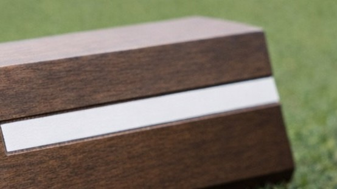
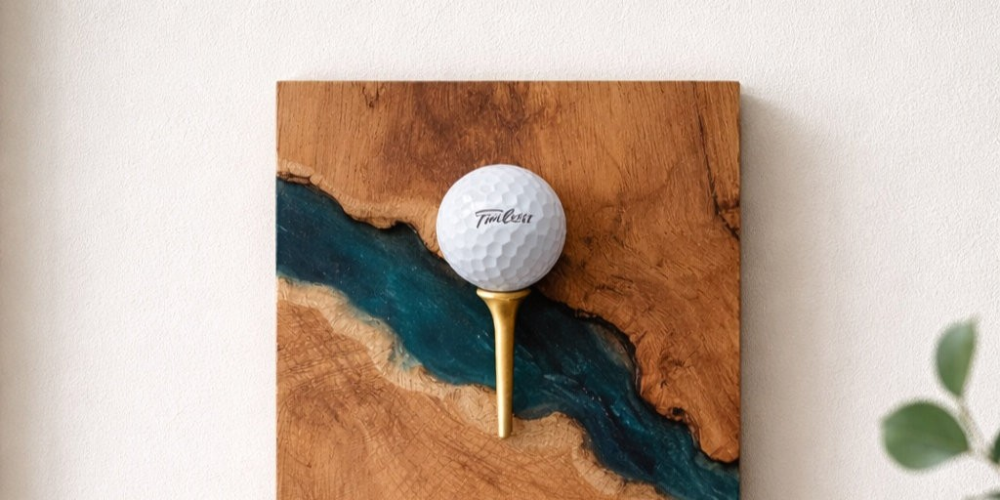
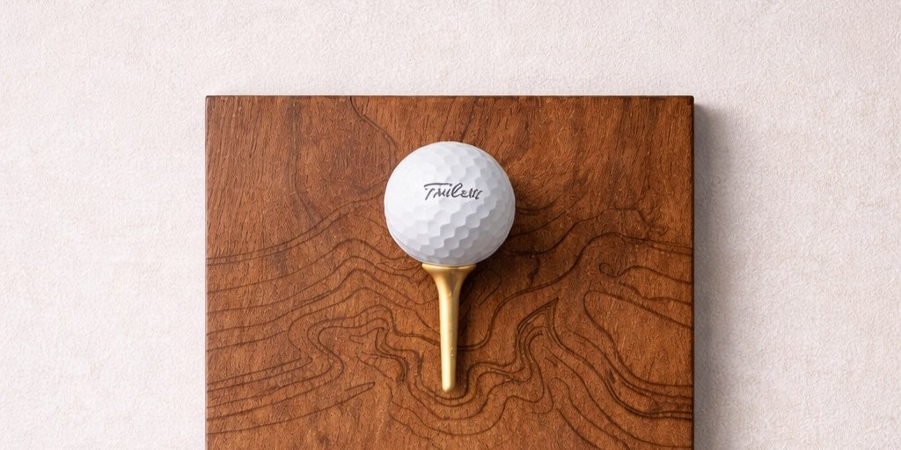

Designed for one course. Built to live on it.
18th Grain
- Vancouver studio
- Award-winning designer
- One course at a time
What we make
Not a catalogue.
- 01 / 04 Tee markers Hardwood and steel.
- 02 / 04 Yardage markers Fairway and tee-side.
- 03 / 04 Plaques Commemorative and hole-in-one.
- 04 / 04 Course signs Wayfinding and information.
Selected work
Recent and in progress.
Shown as renderings.


The maker
One studio. Over 15 years of experience.
Benjamin McLaughlin has spent more than a decade designing and building custom pieces from his Vancouver studio.
Start a project
Made for the course.
Tell us about the course, the piece, and when you'd want it in place.
18th
Grain